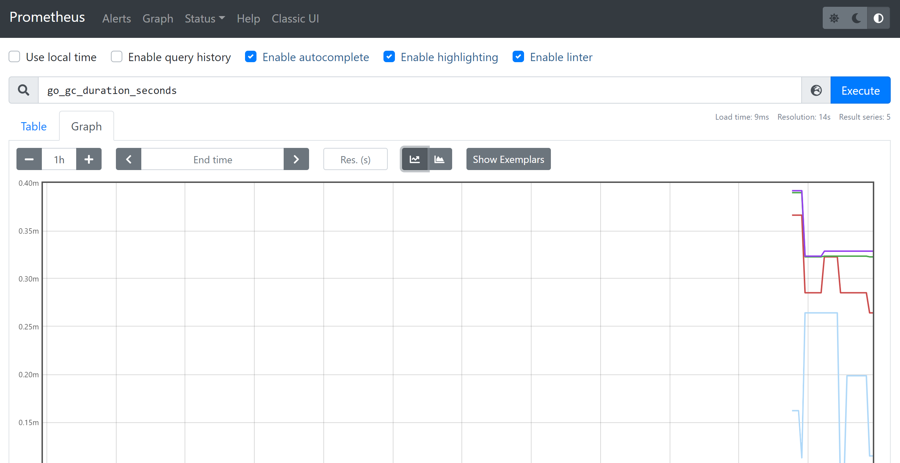
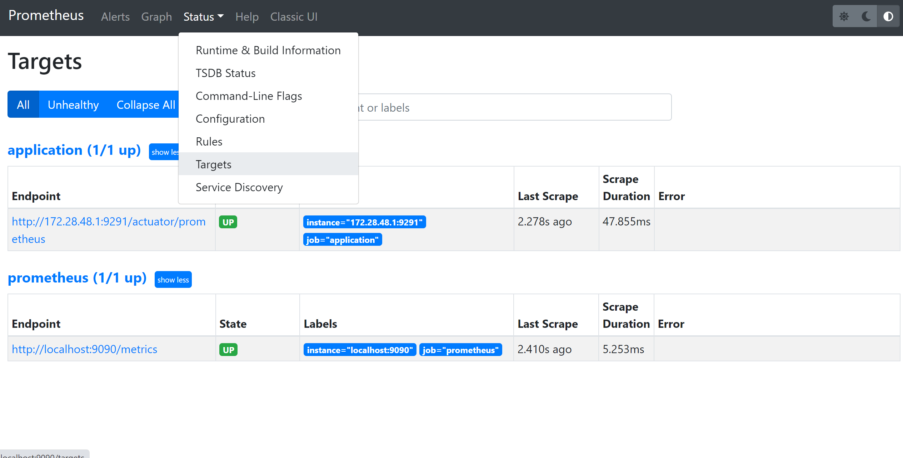
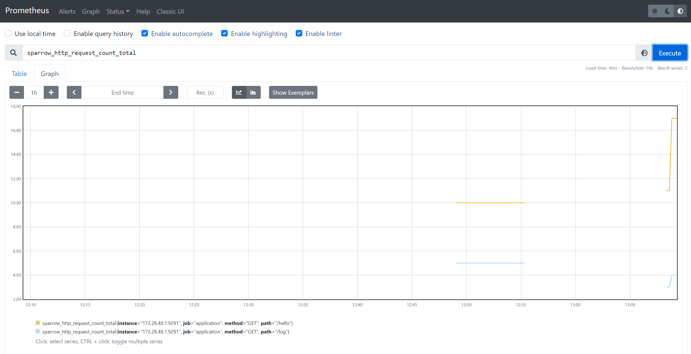
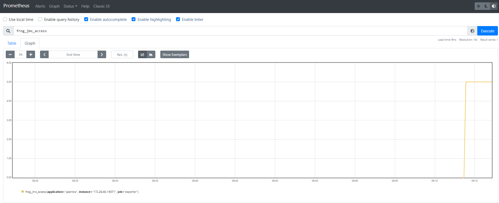
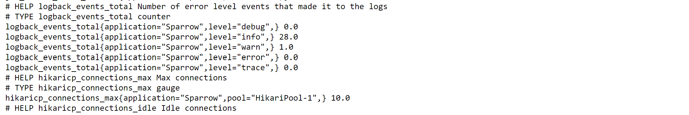
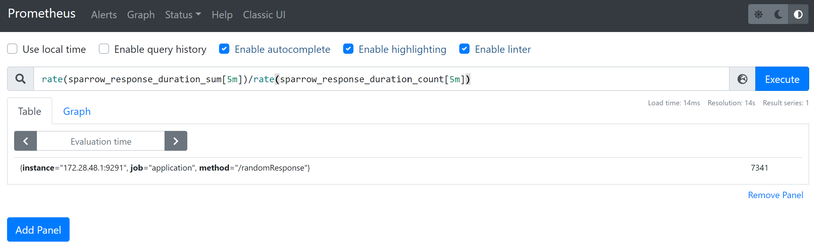

Prometheus是一个开源的系统监控和报警系统.
接下来, 先快速搭建一个Prometheus应用; 然后, 对java应用进行监控使得对其有一个直观的了解; 然后, 再介绍一下其相关的概念以及其他东西.
global:
scrape_interval: 15s # 从被监控目标上抓取数据的时间间隔
# 外部标签
external_labels:
monitor: 'codelab-monitor'
# 抓取配置
scrape_configs:
- job_name: 'prometheus'
# 为这个抓取任务单独配置抓取数据时间间隔
scrape_interval: 5s
# 该任务监控的目标对象
static_configs:
- targets: ['localhost:9090']
nohup ./prometheus --config.file=prometheus.yml &
Prometheus可以监控的组件有很多, 例如各种语言开发的应用, mysql, kafka, ElasticSearch等. 这里先以监控java应用为例.
首先, 监控java应用的方式与OpenTelemetry类似, 也是分为手动嵌码和agent嵌码的方式. 但是, 对于链路追踪, 一般采用agent的方式比较好, 因为链路追踪的数据可定制性不高. 当时对于指标监控, 手动嵌码应该会更好些, 更容易做一些业务监控等. 下面首先演示手动嵌码:
<dependency>
<groupId>org.springframework.boot</groupId>
<artifactId>spring-boot-starter-actuator</artifactId>
</dependency>
<dependency>
<groupId>io.micrometer</groupId>
<artifactId>micrometer-registry-prometheus</artifactId>
</dependency>
@Bean(value = "meterRegistryCustomizer")
public MeterRegistryCustomizer<MeterRegistry> meterRegistryCustomizer(@Value("${spring.application.name}") String applicationName) {
return meterRegistry -> meterRegistry.config()
.commonTags("application", applicationName);
}
@Configuration
public class PrometheusConfiguration {
@Resource
private PrometheusMeterRegistry meterRegistry;
/**
* 统计访问量
*/
@Bean
public Counter requestTotalCountCollector(){
return Counter.build().name("sparrow_http_request_count")
.labelNames("path", "method").help("http请求数").register(meterRegistry.getPrometheusRegistry());
}
@Bean
public WebMvcConfigurer openTelemetryMvcConfigurer(@Qualifier("requestTotalCountCollector") final Counter counter){
return new WebMvcConfigurer(){
@Override
public void addInterceptors(InterceptorRegistry registry){
// 注册 访问量统计的counter拦截器
registry.addInterceptor(new HandlerInterceptor(){
@Override
public boolean preHandle(HttpServletRequest request, HttpServletResponse response, Object handler) throws Exception {
String uri = request.getRequestURI();
String method = request.getMethod();
counter.labels(uri, method).inc();
return true;
}
});
}
};
}
}
第2步的代码不一定要放到启动类中, 第二步中注册的bean在
private PrometheusMeterRegistry meterRegistry;注入之前执行就可以.
application.ymlmanagement:
server:
port: 9291 # 暴露出去的监控端口
metrics:
export:
prometheus:
enabled: true
endpoint:
metrics:
enabled: true
prometheus:
enabled: true
endpoints:
web:
exposure:
include: ["prometheus","health"]
启动应用, 访问http://localhost:9291/actuator/prometheus就可以看到所有该应用下被监控的指标了.
配置Prometheus的target, 在prometheus.yml的scrape_configs中增加配置:
- job_name: "application"
metrics_path: "/actuator/prometheus"
static_configs:
- targets: ["172.28.48.1:9291"]


自动嵌码时, 需要使用外部插件, 在Prometheus中称为exporter. 这里演示两个监控的exporter, 分别是: jmx_exporter用来监控java应用的基本指标; mysqld_exporter用来监控mysql的基本指标.
jmx_exporter
对java程序进行监控, 实际上使用了jvm的jmx技术, 参见: jmx. jmx_exporter可以收集所有jmx采集到的常规信息(内存, cpu, 线程等), 还可以对应用程序中暴露出来的MBean进行操作.
---
startDelaySeconds: 0
ssl: false
lowercaseOutputName: false
lowercaseOutputLabelNames: false
rules:
- pattern: 'frog<name=(\w+)><>(\w+):'
name: frog_jmx_$2
labels:
"application": "sparrow"
type: COUNTER
attrNameSnakeCase: true
对参数进行解释:
关于pattern, 还没太搞明白, 官方解释翻译过来是这样的, 基本格式:
domain<beanpropertyName1=beanPropertyValue1, beanpropertyName2=beanPropertyValue2, ...><key1, key2, ...>attrName: value
import org.springframework.jmx.export.annotation.ManagedAttribute;
import org.springframework.jmx.export.annotation.ManagedResource;
import org.springframework.stereotype.Component;
import java.util.concurrent.atomic.AtomicInteger;
@Component
@ManagedResource(objectName = "frog:name=FrogTest", description = "frog test")
public class FrogMonitor {
private final AtomicInteger access = new AtomicInteger(0);
@ManagedAttribute
public String getName(){
return "Frog";
}
@ManagedAttribute
public int getAccess(){
return access.get();
}
public void accessIncrement(){
access.incrementAndGet();
}
}
-javaagent:D:\work\Prometheus\jmx_prometheus_javaagent-0.16.1.jar=9071:config.yaml
mysqld_exporter
创建用户, 并指定密码:
CREATE USER 'exporter'@'%' IDENTIFIED BY '123456' WITH MAX_USER_CONNECTIONS 3;
用户授权:
GRANT PROCESS, REPLICATION CLIENT, SELECT ON *.* TO 'exporter'@'%';
my.cnf[client]
host=127.0.0.1
port=13306
user=exporter
password=123456
mysqld_exporter.exe --config.my-cnf=my.cnfmysqld_exporter默认暴露端口是9104, 如果想修改, 需要启动是指定--web.listen-address, 例如:mysqld_exporter.exe --config.my-cnf=my.cnf --web.listen-address=":9105"
# HELP mysql_up Whether the MySQL server is up.
# TYPE mysql_up gauge
mysql_up 1
- job_name: "mysql"
static_configs:
- targets: ["172.28.48.1:9104"]
这里我配置的时候, 出了点问题, 导致Prometheus服务直接访问不到mysqld_exporter, 后来通过nginx转发解决了.
通过上面的基本演示, 对Prometheus有了一定的整体概念, 接下来, 详细解释一下这些概念.
Prometheus中存储的数据都是时序数据. 每一个时序的数据都由metric和多个label键值对确定. label是可选的, 可以没有.
<metric name>{<label name>=<label value>, ...}, 如图所示:
metric type
Prometheus中metric有4中类型, 分别是:
实际代码是这样的:
@Bean
public Histogram responseTimeCollector(){
return Histogram.build().name("sparrow_response_duration")
.labelNames("method").help("响应时间").exponentialBuckets(1, 5, 6).register(meterRegistry.getPrometheusRegistry());
}
private static class PrometheusMonitorInterceptor implements HandlerInterceptor {
private final ThreadLocal<Long> requestStart = new ThreadLocal<>();
private final Histogram responseHistogram;
public PrometheusMonitorInterceptor(Histogram responseHistogram) {
this.responseHistogram = responseHistogram;
}
@Override
public boolean preHandle(HttpServletRequest request, HttpServletResponse response, Object handler) throws Exception {
requestStart.set(System.currentTimeMillis());
return true;
}
@Override
public void postHandle(HttpServletRequest request, HttpServletResponse response, Object handler, ModelAndView modelAndView) throws Exception {
try{
String uri = request.getRequestURI();
Long start = requestStart.get();
if(start != null){
long duration = System.currentTimeMillis() - start;
this.responseHistogram.labels(uri).observe(duration);
}
}finally {
requestStart.remove();
}
}
}
实际上只采集了一个值, Prometheus客户端会直接进行聚合计算. 首先Histogram定义的时候指定了buckets桶(最小值1, 步长5, 指数增长, 共6个桶); 然后, 采集的duration会被统计到指定的bucket里边, 举个例子, 如果duration = 50, 那么le = 125.0, 625.0, 3125.0, +Inf都会自增1. 此外, 还会统计出*_count(总的样本数)和*_sum(所有duration值求和); 这样, 就可以计算出平均响应时间了rate(sparrow_response_duration_sum[5m])/rate(sparrow_response_duration_count[5m]), 此外还可以用来计算apdex, apdex的计算公式为: (满意次数 + 可容忍次数 / 2) / 总请求数.

如下示例:
@Bean
public Summary responseTimeSummaryCollector(){
return Summary.build().name("sparrow_response_duration_quantiles")
.labelNames("method").help("响应时间分位")
.quantile(0.5, 0.05)
.quantile(0.9, 0.01)
.quantile(0.99, 0.001)
.register(meterRegistry.getPrometheusRegistry());
}
private static class PrometheusMonitorInterceptor implements HandlerInterceptor {
private final ThreadLocal<Long> requestStart = new ThreadLocal<>();
private final Summary responseTimeSummaryCollector;
public PrometheusMonitorInterceptor(Summary responseTimeSummaryCollector) {
this.responseTimeSummaryCollector = responseTimeSummaryCollector;
}
@Override
public boolean preHandle(HttpServletRequest request, HttpServletResponse response, Object handler) throws Exception {
requestStart.set(System.currentTimeMillis());
return true;
}
@Override
public void postHandle(HttpServletRequest request, HttpServletResponse response, Object handler, ModelAndView modelAndView) throws Exception {
try{
String uri = request.getRequestURI();
Long start = requestStart.get();
if(start != null){
long duration = System.currentTimeMillis() - start;
this.responseTimeSummaryCollector.labels(uri).observe(duration);
}
}finally {
requestStart.remove();
}
}
}
一段时间的采样结果如下:
# HELP sparrow_response_duration_quantiles 响应时间分位
# TYPE sparrow_response_duration_quantiles summary
sparrow_response_duration_quantiles{method="/randomResponse",quantile="0.5",} 4690.0
sparrow_response_duration_quantiles{method="/randomResponse",quantile="0.9",} 7531.0
sparrow_response_duration_quantiles{method="/randomResponse",quantile="0.99",} 7531.0
sparrow_response_duration_quantiles_count{method="/randomResponse",} 13.0
sparrow_response_duration_quantiles_sum{method="/randomResponse",} 68280.0
从结果上分析数, 有50%的请求平均响应时间是4690ms, 有70%的请求平均响应时间是7531ms, 有99%的请求平均响应时间是7531ms, 总的请求次数是13次, 总响应时间是68280ms.
需要留意一下, 在这个Summary定义的时候, quantile方法有两个参数, 第一个是分位值, 第二个是误差errors-of-quantile-estimation. 误差存在的原因是这样的, 假设使用histogram来计算分位值, 如果响应时间有50%都接近350ms, 所以这50%会落在[125,625]的区间中, histogram在计算是最终会给出一个响应时间的数值, 而不是一个数, 这时不是计算区间的平均值(375), 而是将这个区间平均分为100段, 取第95段的值, 即600, 最终给出的结果是: 有50%的请求响应时间在600ms, 这显然距离真实结果差的很多(当然, 这里也也有采用指数分布bucket的缘故), 总之由于Histogram采样的结果是一个分布区间, 而且它的分位值计算需要再服务端进行, 所以会有很大的出入; 然后, 回到Summary上, Summary计算分位值是在客户端进行计算的, 它可以在内部存储每一采样原始的值, 所以可以很精确的计算出分位值, 但是, 这时有代价的, 需要保存每一个采样的原始值! 对内存和cpu都有一定的要求, 尤其是这个计算是在客户端, 所以, 这里会要求配置一个误差值, 使得在误差范围内丢掉一些采样数据; 例如, 配置的是0.95±0.01, 那么最终结果会保证位于0.94--0.96的区间.
Histogram和Summary的应用场景之一是: 如果大多数 API 请求都维持在 100ms 的响应时间范围内，而个别请求的响应时间需要 5s，那么就会导致某些 WEB 页面的响应时间落到中位数的情况，而这种现象被称为长尾问题.
PromQL
关于PromQL, 详见QUERYING PROMETHEUS
基本原理
Prometheus会每个一段时间, 向配置好的target中的地址发送请求, 获取指标数据.